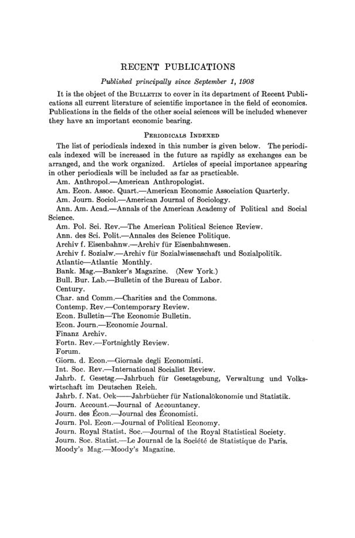

O quarto Bulletin: Patten e a forma da literatura econômica
Leitura: 6 min
O número de dezembro de 1908 antecipa o discurso presidencial de S. N. Patten sobre a literatura econômica e traz o programa da reunião de Atlantic City, 31 resenhas e a bibliografia desde setembro.


O número de dezembro de 1908 imprime um discurso que ainda não tinha sido proferido. A comissão executiva pediu que o discurso presidencial de S. N. Patten, da Universidade da Pensilvânia, marcado para 28 de dezembro em Atlantic City, saísse antes no Bulletin, para que os sócios o estudassem antes da discussão.
O que contavam as notas?
A reunião anual ocupa as primeiras páginas. Seria realizada em Atlantic City, de 28 a 31 de dezembro, com a American Sociological Society, a American Statistical Association e a American Association for Labor Legislation, e sede no Haddon Hall. O programa provisório inclui a teoria da negociação coletiva, por J. B. Clark, uma mesa sobre contabilidade, a responsabilidade dos empregadores por acidentes, a lei canadense de disputas industriais, a revisão da tarifa, um banco central e a capitalização das empresas de serviço público, por C. J. Bullock.
O ensino de negócios avança em outras frentes. A Northwestern University School of Commerce é inaugurada em 19 de outubro, e a Universidade de Minnesota abre cursos noturnos de contabilidade, com B. M. Rastall à frente da formação para as profissões de negócios. Em Londres, W. Pember Reeves sucede H. J. Mackinder na direção da London School of Economics, e E. J. Urwick sucede C. S. Loch na cátedra Tooke do King's College. Em Chicago, a School of Civics and Philanthropy começa uma investigação sobre moradia, com apoio da Russell Sage Foundation e a cargo de Edith Abbott.
Em Paris, a Société d'Économie Politique discute o congresso de livre-comércio realizado em Londres em agosto de 1908. Guyot resume o resultado: a proteção não se justifica do ponto de vista econômico; se tanto, só do político.
O que propunha Patten?
The Making of Economic Literature (pp. 290–300) compara as duas metades dos 23 anos passados desde a fundação da associação, em Saratoga. Nos periódicos, a teoria cedeu lugar à descrição; nas teses, o ensaio curto de tese nítida virou o volume pesado de fatos. Para Patten, a essência da literatura econômica está nos contrastes, como em Adam Smith a simpatia contra o interesse próprio, ou a tríade terra, trabalho e capital. O economista deveria ter o instinto do contador e do cartunista, com gráficos, diagramas e frases fortes, e escrever para o jornal e a revista. Investigações de grande escala caberiam a instituições como o Bureau of Municipal Research, a Russell Sage Foundation ou o governo nacional. A pós-graduação deveria virar escola de expressão, aliada ao direito.
Ser científico é ser popular. (To be scientific is to be popular.)
Nenhum economista é economista até ter dito a si mesmo: “Quisera eu ser editor.” (No economist is an economist until he has said to himself, 'I wish I were an editor.')
Que livros foram resenhados?
São 31 resenhas. A teoria abre com o Outlines of Economics de Richard T. Ely, revisto e ampliado, que T. N. Carver apresenta como o primeiro manual geral a tratar a fundo o princípio da produtividade decrescente. A agricultura forma um bloco: a reforma agrária de Jesse Collings, The State and the Farmer, de L. H. Bailey, um manual de agricultura preparado para o Sudoeste, os dois livros de Bolton Hall sobre pequenas propriedades e a destilação de resíduos de madeira.
A regulação de transportes e serviços públicos é o tema mais denso. Stuart Daggett resenha os primeiros relatórios das comissões de serviço público de Nova York e o primeiro volume de decisões da comissão ferroviária de Wisconsin, e tem seu próprio Railroad Reorganization resenhado por Harrison Standish Smalley. M. B. Hammond examina as decisões federais sob a lei antitruste de 1890; Ralph E. Heilman trata dos bondes de Chicago; J. O. Fagan, sinaleiro, escreve sobre a segurança das ferrovias americanas.
Finanças e tributação aparecem com as memórias de Henry Clews em Wall Street, os trabalhos sobre tributação da Minnesota Academy of Social Sciences, a história financeira de Wisconsin de Raymond Vincent Phelan e o anuário oficial da Austrália de G. H. Knibbs, os três últimos resenhados por Carl C. Plehn. O bloco social reúne a vadiagem, o leite para lactentes, The Iron Heel, de Jack London, a ética de Dewey e Tufts, a conferência de Benjamin Kidd sobre o individualismo e livros sobre a China e o Extremo Oriente.
Como se organizava a bibliografia?
A seção Recent Publications cobre obras publicadas sobretudo desde 1º de setembro de 1908, nas mesmas seções numeradas, das obras gerais e de teoria à miscelânea. Por ser o último número do volume, o de dezembro traz também o sumário e o índice do volume I.
Na minha leitura
Na minha leitura, o discurso de Patten é um diagnóstico de método antes de ser uma provocação. Ele registra o mesmo movimento que os números anteriores do Bulletin mostram, a passagem da teoria dedutiva para a coleta de fatos, mas tira dele a conclusão oposta à de quem montava tabelas: o economista deveria produzir contrastes e deixar a investigação em grande escala para instituições. O próprio número mostra o outro lado, com Daggett reconstruindo a história de oito ferrovias caso a caso. A tensão entre a ideia nítida e a evidência acumulada atravessa a profissão desde então.
Glossário
- Produtividade decrescente
- queda do acréscimo de produto quando se adiciona um fator de produção a outros mantidos fixos.
- Reorganização ferroviária
- reestruturação financeira de uma ferrovia em dificuldades, com troca de títulos e novo controle.
- Comissão de serviço público
- órgão estadual que regula tarifas e serviços de ferrovias, bondes e outras empresas de utilidade pública.
Artigos desta edição
- Personal and Miscellaneous Notes — editores (pp. 279–289). Programa da reunião anual de Atlantic City e das associações que se reuniam com ela, a reunião da comissão executiva, nomeações, a abertura de escolas de negócios e notícias da London School of Economics e da Société d'Économie Politique. JSTOR
- The Making of Economic Literature — S. N. Patten (pp. 290–300). Discurso presidencial impresso antes da reunião anual, que defende textos curtos, contrastes e gráficos em lugar de volumes extensos e propõe reformar a pós-graduação como escola de expressão. JSTOR
- Richard T. Ely, Outlines of Economics — T. N. Carver (pp. 301–302). Edição revista e ampliada do manual universitário, que abre com a evolução da sociedade industrial e trata do princípio da produtividade decrescente. JSTOR
- Jesse Collings, Land Reform: Occupying Ownership, Peasant Proprietary, and Rural Education — James B. Morman (pp. 302–305). Nova edição barata do livro nascido do projeto de lei de compra de terras apresentado pelo autor ao Parlamento em 1904, com uma história do sistema fundiário inglês. JSTOR
- L. H. Bailey, The State and the Farmer — Henry C. Taylor (pp. 305–307). Livro sobre os problemas do agricultor e da vida rural e sobre o papel do governo em resolvê-los, com destaque para a fazenda abandonada como caso de reajuste. JSTOR
- A. M. Ferguson e L. L. Lewis, Elementary Principles of Agriculture — D. J. Crosby (pp. 307–308). Manual escolar que trata a agricultura como negócio, ciência e ofício, da botânica e dos solos à criação de animais, preparado para o Sudoeste. JSTOR
- Walter B. Harper, The Utilization of Wood Waste by Distillation — S. M. Woodward (pp. 308–309). Obra ilustrada sobre os princípios físicos e químicos da destilação da madeira e os aparelhos usados comercialmente no processo. JSTOR
- Bolton Hall, Three Acres and Liberty; A Little Land and a Living — James B. Morman (pp. 309–312). Dois livros de um advogado interessado em questões sociais que propõem a pequena propriedade agrícola como meio de aliviar a pobreza e o congestionamento urbanos. JSTOR
- Achille Viallate, L'Industrie américaine — Frank L. McVey (pp. 312–313). Livro para o público francês sobre a evolução industrial e a política comercial, a organização e a expansão da indústria dos Estados Unidos. JSTOR
- Public Service Commission of the State of New York, First and Second Districts, Annual Report for Year 1907 — Stuart Daggett (pp. 313–315). Relatórios dos primeiros seis meses das comissões de serviços públicos de Nova York; a do primeiro distrito, a cidade de Nova York, dedicou-se sobretudo ao transporte rápido. JSTOR
- Wisconsin Railroad Commission Reports, vol. 1 — Stuart Daggett (pp. 315–317). Primeiro volume de decisões da comissão ferroviária de Wisconsin criada em 1905, com poder sobre tarifas, classificações, vagões, contas e custo de construção das ferrovias. JSTOR
- James A. Finch (ed.), Federal Anti-Trust Decisions — M. B. Hammond (pp. 317–322). Coletânea em dois volumes, feita por ordem do procurador-geral, dos casos julgados nos tribunais federais sob a lei antitruste de 2 de julho de 1890. JSTOR
- Henry Clews, Fifty Years in Wall Street — F. W. Powell (pp. 322–323). Edição ampliada das memórias de um banqueiro de Wall Street, que acrescenta um resumo dos 22 anos posteriores à edição original. JSTOR
- Frank L. McVey (ed.), Taxation: Papers and Proceedings of the First Annual Meeting of the Minnesota Academy of Social Sciences — Carl C. Plehn (pp. 323–325). Nove trabalhos sobre tributação, entre eles um sobre a taxação das ferrovias de Michigan e três sobre o imposto de registro de hipotecas. JSTOR
- Raymond Vincent Phelan, The Financial History of Wisconsin — Carl C. Plehn (pp. 325–326). Tese de doutorado baseada em documentos originais, parte das investigações sobre a história financeira dos estados feitas com apoio da Carnegie Institution. JSTOR
- George B. Louis Arner, Consanguineous Marriages in the American Population — William B. Bailey (pp. 326–328). Monografia de Columbia sobre casamentos consanguíneos nos Estados Unidos, feita com estatística escassa, monografias anteriores e genealogias de famílias. JSTOR
- G. H. Knibbs, Official Year Book of the Commonwealth of Australia, 1901–1907 — Carl C. Plehn (pp. 328). Compêndio oficial de estatísticas financeiras, econômicas e sociais da Austrália, organizado pelo estatístico da Commonwealth, com mapas e gráficos. JSTOR
- Jack London, The Iron Heel — Frank A. Fetter (pp. 328–329). Romance social, na linha de Looking Backward, que narra um avanço imaginário do socialismo e sua repressão pela classe dominante. JSTOR
- John Spargo, The Common Sense of the Milk Question — G. N. Lauman (pp. 329–330). Livro para o leitor leigo sobre os aspectos político-sociais da questão do leite, em sua maior parte uma defesa dos postos de distribuição de leite para lactentes. JSTOR
- Edmond Kelly, The Elimination of the Tramp — Orlando F. Lewis (pp. 331–333). Proposta de colônias de trabalho para tratar a vadiagem, baseada sobretudo na colônia compulsória suíça de Witzwyl e na colônia voluntária vizinha. JSTOR
- Charles Zueblin, The Religion of a Democrat — Isaac A. Loos (pp. 333–335). Série curta de ensaios sobre temperamento e personalidade, ortodoxia, declínio da autoridade, religião e Estado e imortalidade impessoal. JSTOR
- John Dewey e James H. Tufts, Ethics — Charles A. Ellwood (pp. 335–336). Tratado de ética dividido em terços: história social e origens da moralidade, teoria ética e problemas sociais e econômicos vistos do ponto de vista ético. JSTOR
- American Sociological Society, Papers and Proceedings of the Second Annual Meeting — Charles A. Ellwood (pp. 336–337). Segundo volume de atas da sociedade, com os trabalhos da reunião de Madison, em dezembro de 1907, dedicada ao conflito social. JSTOR
- F. A. McKenzie, The Unveiled East — Edw. D. Jones (pp. 337–338). Relato dos acontecimentos no Extremo Oriente desde a guerra russo-japonesa, da política comercial japonesa às mudanças na China e à disputa pelo comércio oriental. JSTOR
- Fabian Franklin, People and Problems — Isaac A. Loos (pp. 338–339). Coletânea de discursos e editoriais do editor do Baltimore News entre 1895 e 1908, antigo professor de matemática da Johns Hopkins. JSTOR
- Robert Kennedy Duncan, The Chemistry of Commerce — Edw. D. Jones (pp. 339–340). Ensaios populares sobre a química de certas indústrias, escritos para levar fabricantes a usar mais a química e jovens químicos a entrar na indústria. JSTOR
- William N. Brewster, The Evolution of New China — Ozro C. Gould (pp. 340–341). Livro de um missionário na China que dedica a primeira metade às condições políticas e industriais do país e a segunda a questões éticas e religiosas. JSTOR
- Stuart Daggett, Railroad Reorganization — Harrison Standish Smalley (pp. 341–343). Estudo indutivo das reorganizações de oito ferrovias americanas, volume IV das Harvard Economic Studies. JSTOR
- Maurice Parmelee, The Principles of Anthropology and Sociology in their Relation to Criminal Procedure — Ulysses G. Weatherly (pp. 344–345). Livro que leva à prática penal anglo-americana resultados da antropologia e da criminologia continentais, a partir de Beccaria e dos criminologistas italianos. JSTOR
- Benjamin Kidd, Individualism and After — Charles A. Ellwood (pp. 345–346). Conferência Herbert Spencer de 1908, em Oxford, sobre a passagem do individualismo de Spencer para concepções mais orgânicas da vida social. JSTOR
- Ralph E. Heilman, Chicago Traction: A Study of the Effort of the Public to Secure Good Service — George Ray Wicker (pp. 346–348). História das companhias de bondes de Chicago de 1858 até a eleição municipal de abril de 1907, publicada pela própria associação. JSTOR
- J. O. Fagan, Confessions of a Railroad Signalman — Frank Haigh Dixon (pp. 348–349). Depoimento de um ferroviário com 27 anos de serviço, que busca o remédio para os acidentes nas ferrovias americanas numa disciplina adequada do pessoal. JSTOR
- Henry A. Wise Wood, Money Hunger — Jeremiah W. Jenks (pp. 349–351). Livro sobre os males políticos e sociais dos métodos americanos de fazer negócios, com propostas que incluem o ensino de moral comercial e editores voltados ao bem público. JSTOR
- Recent Publications (pp. 352–377). Bibliografia corrente, sobretudo de obras publicadas desde 1º de setembro de 1908, com lista de periódicos indexados e seções temáticas numeradas de livros e artigos. JSTOR
Fontes
- Personal and Miscellaneous Notes (pp. 279–289). JSTOR · Internet Archive (PDF)
- The Making of Economic Literature (pp. 290–300). JSTOR · Internet Archive (PDF)
- [untitled] The Economic Bulletin, (1908-12-01), pages 301-302 (pp. 301–302). JSTOR · Internet Archive (PDF)
- [untitled] The Economic Bulletin, (1908-12-01), pages 302-305 (pp. 302–305). JSTOR · Internet Archive (PDF)
- [untitled] The Economic Bulletin, (1908-12-01), pages 305-307 (pp. 305–307). JSTOR · Internet Archive (PDF)
- [untitled] The Economic Bulletin, (1908-12-01), pages 307-308 (pp. 307–308). JSTOR · Internet Archive (PDF)
- [untitled] The Economic Bulletin, (1908-12-01), pages 308-309 (pp. 308–309). JSTOR · Internet Archive (PDF)
- [untitled] The Economic Bulletin, (1908-12-01), pages 309-312 (pp. 309–312). JSTOR · Internet Archive (PDF)
- [untitled] The Economic Bulletin, (1908-12-01), pages 312-313 (pp. 312–313). JSTOR · Internet Archive (PDF)
- [untitled] The Economic Bulletin, (1908-12-01), pages 313-315 (pp. 313–315). JSTOR · Internet Archive (PDF)
- [untitled] The Economic Bulletin, (1908-12-01), pages 315-317 (pp. 315–317). JSTOR · Internet Archive (PDF)
- [untitled] The Economic Bulletin, (1908-12-01), pages 317-322 (pp. 317–322). JSTOR · Internet Archive (PDF)
- [untitled] The Economic Bulletin, (1908-12-01), pages 322-323 (pp. 322–323). JSTOR · Internet Archive (PDF)
- [untitled] The Economic Bulletin, (1908-12-01), pages 323-325 (pp. 323–325). JSTOR · Internet Archive (PDF)
- [untitled] The Economic Bulletin, (1908-12-01), pages 325-326 (pp. 325–326). JSTOR · Internet Archive (PDF)
- [untitled] The Economic Bulletin, (1908-12-01), pages 326-328 (pp. 326–328). JSTOR · Internet Archive (PDF)
- [untitled] The Economic Bulletin (1908-12-01), page 328 (pp. 328). JSTOR · Internet Archive (PDF)
- [untitled] The Economic Bulletin, (1908-12-01), pages 328-329 (pp. 328–329). JSTOR · Internet Archive (PDF)
- [untitled] The Economic Bulletin, (1908-12-01), pages 329-330 (pp. 329–330). JSTOR · Internet Archive (PDF)
- [untitled] The Economic Bulletin, (1908-12-01), pages 331-333 (pp. 331–333). JSTOR · Internet Archive (PDF)
- [untitled] The Economic Bulletin, (1908-12-01), pages 333-335 (pp. 333–335). JSTOR · Internet Archive (PDF)
- [untitled] The Economic Bulletin, (1908-12-01), pages 335-336 (pp. 335–336). JSTOR · Internet Archive (PDF)
- [untitled] The Economic Bulletin, (1908-12-01), pages 336-337 (pp. 336–337). JSTOR · Internet Archive (PDF)
- [untitled] The Economic Bulletin, (1908-12-01), pages 337-338 (pp. 337–338). JSTOR · Internet Archive (PDF)
- [untitled] The Economic Bulletin, (1908-12-01), pages 338-339 (pp. 338–339). JSTOR · Internet Archive (PDF)
- [untitled] The Economic Bulletin, (1908-12-01), pages 339-340 (pp. 339–340). JSTOR · Internet Archive (PDF)
- [untitled] The Economic Bulletin, (1908-12-01), pages 340-341 (pp. 340–341). JSTOR · Internet Archive (PDF)
- [untitled] The Economic Bulletin, (1908-12-01), pages 341-343 (pp. 341–343). JSTOR · Internet Archive (PDF)
- [untitled] The Economic Bulletin, (1908-12-01), pages 344-345 (pp. 344–345). JSTOR · Internet Archive (PDF)
- [untitled] The Economic Bulletin, (1908-12-01), pages 345-346 (pp. 345–346). JSTOR · Internet Archive (PDF)
- [untitled] The Economic Bulletin, (1908-12-01), pages 346-348 (pp. 346–348). JSTOR · Internet Archive (PDF)
- [untitled] The Economic Bulletin, (1908-12-01), pages 348-349 (pp. 348–349). JSTOR · Internet Archive (PDF)
- [untitled] The Economic Bulletin, (1908-12-01), pages 349-351 (pp. 349–351). JSTOR · Internet Archive (PDF)
- Recent Publications (pp. 352–377). JSTOR · Internet Archive (PDF)
- Sumário da edição no JSTOR: The Economic Bulletin, vol. 1, nº 4.
Documento em domínio público (EUA, publicado antes de 1931), via JSTOR Early Journal Content e Internet Archive. Resumo e comentário do autor deste site, sem afiliação com a American Economic Association. Encontrou um erro? Escreva: a correção é publicada no próprio texto, com data.
← Nº 94 · Seligman, 1908: o imposto progressivo entre a teoria e a prática Nº 96 · Atlantic City, 1908: sindicatos, acidentes, tarifas e o banco central →